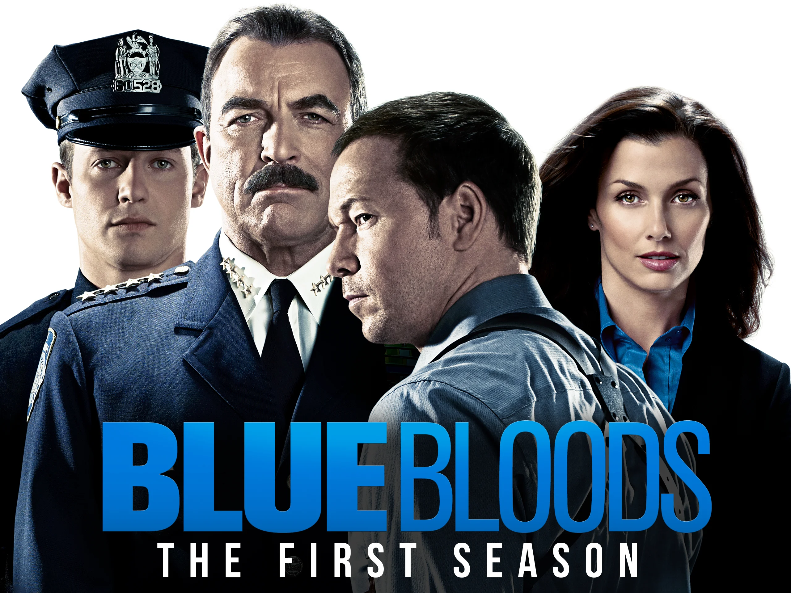

 Blue Bloods Frank Reagan es el jefe del Departamento de Policía de Nueva York. dirige el cuerpo tan diplomáticamente como a su familia, una saga de policías Criminal-Minds Frank Reagan es el jefe del Departamento de Policía de Nueva York. dirige el cuerpo tan diplomáticamente como a su familia, una saga de policías Chicago Frank Reagan es el jefe del Departamento de Policía de Nueva York. dirige el cuerpo tan diplomáticamente como a su familia, una saga de policías Blue Bloods Frank Reagan es el jefe del Departamento de Policía de Nueva York. dirige el cuerpo tan diplomáticamente como a su familia, una saga de policías Blue Bloods Frank Reagan es el jefe del Departamento de Policía de Nueva York. dirige el cuerpo tan diplomáticamente como a su familia, una saga de policías Blue Bloods Frank Reagan es el jefe del Departamento de Policía de Nueva York. dirige el cuerpo tan diplomáticamente como a su familia, una saga de policías Blue Bloods Frank Reagan es el jefe del Departamento de Policía de Nueva York. dirige el cuerpo tan diplomáticamente como a su familia, una saga de policías Blue Bloods Frank Reagan es el jefe del Departamento de Policía de Nueva York. dirige el cuerpo tan diplomáticamente como a su familia, una saga de policías Blue Bloods Frank Reagan es el jefe del Departamento de Policía de Nueva York. dirige el cuerpo tan diplomáticamente como a su familia, una saga de policías Blue Bloods Frank Reagan es el jefe del Departamento de Policía de Nueva York. dirige el cuerpo tan diplomáticamente como a su familia, una saga de policías Blue Bloods Frank Reagan es el jefe del Departamento de Policía de Nueva York. dirige el cuerpo tan diplomáticamente como a su familia, una saga de policías Blue Bloods Frank Reagan es el jefe del Departamento de Policía de Nueva York. dirige el cuerpo tan diplomáticamente como a su familia, una saga de policías